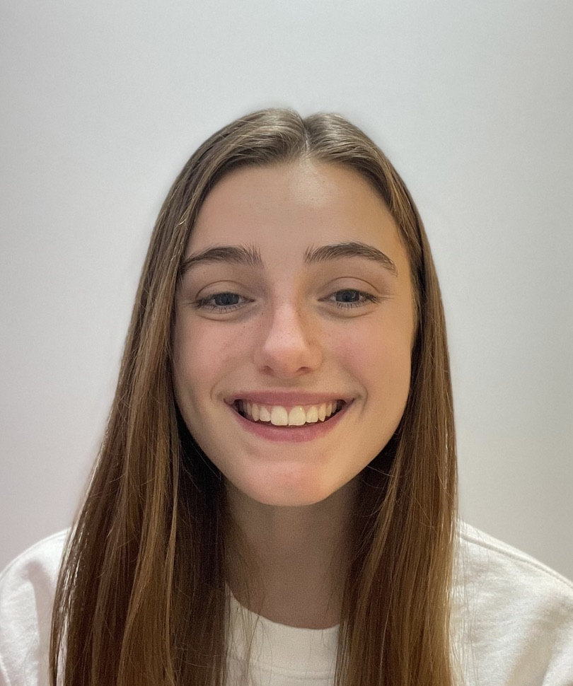

Athena Hartigan
LinkedIn |
Github
I'm a 4th year CS student at Wake Forest . I am a passionate software engineer who is excited to tackle real-world problems with a smile on my face!
Programming Languages: Java, JavaScript, Python, R, C, SQL
Libraries: Scikit-Learn, Pandas, NumPy, Matplotlib, Seaborn
Software Development Tools: HTML, CSS, Git
Experience
Solved complex coding problems for Outlier AI as a freelance engineer, delivering robust and efficient solutions
Thoroughly reviewed and improved code quality by resolving potential issues including bugs and inefficiencies
Assisted in teaching fundamental data structures and algorithms using Java to a class of 30 students
Mentored 40 students during office hours, deepening their understanding of computer science fundamentals
Graded 60 projects that taught students how to insert, update, and delete nodes in a binary search tree
Directed a club of 20 students that helps people with organizational and professional development skills
Collaborated with faculty and club leaders to organize computer science related events and activities
Led a team of 6 software engineers in developing a centralized web platform for Wake Forest Dining
Implemented a centralized front-end interface for 3 dining venues using HTML, CSS, and JavaScript
Supported the development of the search functionality enabling users to find 900+ food items easily
Automated data extraction of menus by co-developing a Python web scraping script with 3 teammates
Leveraged Softrip software to manage time-sensitive details for 4,000+ hotel guest lists
Saved the company $18,000+ by proactively catching a booking error
Helped design the website for 100+ hotels to reduce bounce rates and increase customer conversions
Conducted an in-depth study on the clean tech market that led to a multimillion-dollar investment decision
Monitored daily news regarding 10 firms to help guide the company in adjusting investment positions
Projects
Instagram Photo App
GitHub Project Link
VIDEO
Built a full stack web application that tracks follower reciprocity on Instagram
Detected 400+ non-reciprocal followers after scanning through 5000+ unique accounts
Reduced file upload time 20% by creating a dynamic drag-and-drop user interface
Extracted user data from HTML exports using DOM manipulation techniques
Quiz App
GitHub Project Link
Created a cross platform quiz app to practice 26 essential data structures and algorithms questions
Architected the app so users would have a seamless transition between pages across 11 Dart files
Styled the app, using 16 Flutter widgets, to create a vibrant look that enhances the user experience
Connect Four
GitHub Project Link
Designed a stylish full stack Connect Four web app that was played 100+ times
Developed 6 functions that reset the board, kept track of the score, and detected the winner
Awards and Accolades
Figure Skating
National Synchronized Skating Teams & Skyliners Team Leader | 52 Medals | US Figure Skating Gold Medalist | 2nd Place Easterns | 3rd Place Nationals | 650+ volunteer hours
Girl Scouts
Gold, Silver, and Bronze Award | Top cookie seller (2018, 2020, & 2021) | 350+ volunteer hours